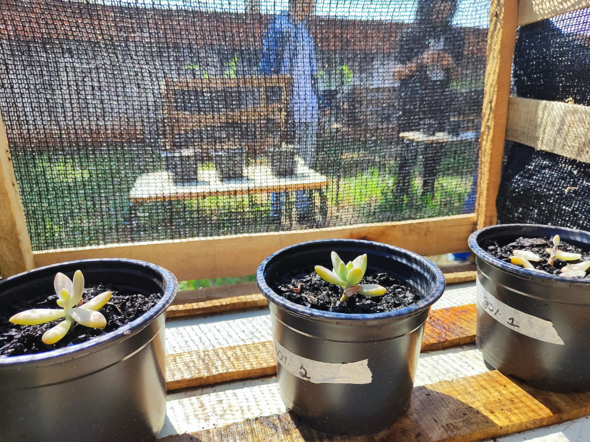

- CEJPC
- Colégio Estadual James Patrick Clark


ANÁLISE DO DESENVOLVIMENTO DE Graptosedum Francesco baldi EM DIFERENTES PORCENTGENS DE SOMBREAMENTO 
Desde o princípio, as plantas se tornaram algo muito importante para nós, sem elas não conseguiríamos comer, beber, fazer remédios e etc. Essa ligação fez com que ficássemos mais próximos da mesma. Hoje cultivamos plantas em nosso jardim, como algo terapêutico, aliviando nosso estresse, ajudando na purificação do ar. As suculentas são plantas ornamentais populares no Brasil, mas há escassez de bibliografia sobre suas características e seu cultivo, visto o grande número de espécies e famílias. Seu diferencial está em suas folhas que podem variar nas cores de acordo com a quantidade de luz solar. É considerada uma planta de crescimento rápido, e pode ser cultivada tanto em vasos e jardineiras, quanto direto ao solo, onde se perfila com facilidade e forma uma bela moita. Pode crescer até 30 cm de altura e 20 cm de largura. Suas folhas são grossas, carnudas e em forma de coração, em tons de rosa, roxo e verde. (Agencia Minas gerais, 2013) A Graptosedum Francesco Baldi é uma suculenta que gosta de luz solar direta, mas também pode se adaptar em ambientes com baixa quantidade de luminosidade. Para nosso trabalho escolhemos uma suculenta por nome de Graptosedum Francesco Baldi, com o intuito de ampliar nossos conhecimentos sobre o cultivo e sobrevivência de plantas como a dessa suculenta.
Resultados e Discuções
As suculentas Francesco Baldi são conhecidas por sua resistência ao sol e sua capacidade de se adaptar a diferentes condições de luz. No entanto, em diferentes níveis de sombreamento: Sombrite 35%: Nesse ambiente, as suculentas Francesco Baldi cresceram vigorosamente, mantendo sua cor e forma originais. Elas receberam luz suficiente para a fotossíntese, permitindo um crescimento saudável e minimizando o risco de queimaduras solares. Sombrite 50%: Sob este nível de sombreamento, as suculentas Francesco Baldi cresceram um pouco mais lentamente do que em condições mais ensolaradas, mas ainda devem manter sua aparência vibrante. A luz difusa disponível deve ser adequada para o seu desenvolvimento saudável. Sombrite 80%:Com esse alto grau de sombreamento, as suculentas Francesco Baldi exibiram um crescimento mais lento e sua coloração pode se tornar um pouco mais pálida devido à menor quantidade de luz direta. No entanto, elas geralmente conseguem se adaptar a essa condição e continuam a prosperar, embora possam ser um pouco menos vigorosas do que em ambientes mais iluminados.
Conclusão
A suculentas que mais se desenvolveram foram as que estavam expostas a 35% de sombreamento. As suculentas são plantas que geralmente prosperam em condições de bastante luz solar, mas muitas delas podem se beneficiar de um pouco de sombra ou proteção contra o sol intenso, especialmente quando são jovens ou em determinadas condições ambientais. O sombreamento de 35% permite que essas plantas recebam luz solar indireta, o que pode ajudar a reduzir o estresse causado pelo calor excessivo ou pela intensidade luminosa extrema. Isso pode resultar em um desenvolvimento mais saudável, já que as suculentas podem utilizar essa luz difusa de maneira eficiente para a fotossíntese, sem sofrer os efeitos prejudiciais de uma exposição direta e intensa ao sol.